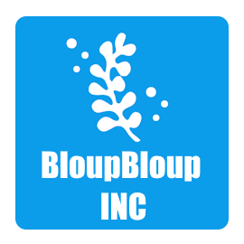

La construction de BloupBloup Ohio commence le 7 Juin 2035,
Nestor Babou, fondateur du projet et fan de requin, prevoyait à l'origine un batiment de 15000 m² uniquement consacré au requin.
Ambre Nani Junior rejoin le projet le 4 Janvier 2036 et propose d'agrandir le batiment pour accueillir d'autres type de poissons et une partie uniquement reservée aux algues.
La construction est finalisée au cours du mois de Juillet 2037, le parc n'ouvrira que deux mois plus tard.
BloupBloup Ohio ouvre le 10 Octobre 2037 avec la présence d'un invité spéciale : Alessandro Rinaldi, le célèbre footballeur Italien.
2500 visiteurs sont présent lors de cette ouverture. Pour un prix de 45 $ par personne.
Le parc continua de se développer avec une moyenne de 850 000 visiteurs par ans, un hôtel pouvant accueillir jusqu'à 1300 personnes devrait être contruit d'ici 2047.
De nombreux activistes pour la cause des algues ont manifestés devant le batiment pour dénoncer la maltraitance des algues dans cet aquarium. La directrice décida de répondre aux accusations 3 semaines plus tard :
Des requins se retrouvé sans vie dans les cuisines du restaurant de "Funky Lobster City". D'après un employé les requins serait utiliser pour faire les nuggets du restaurant quand les cuisiniers n'ont plus de poulet.
